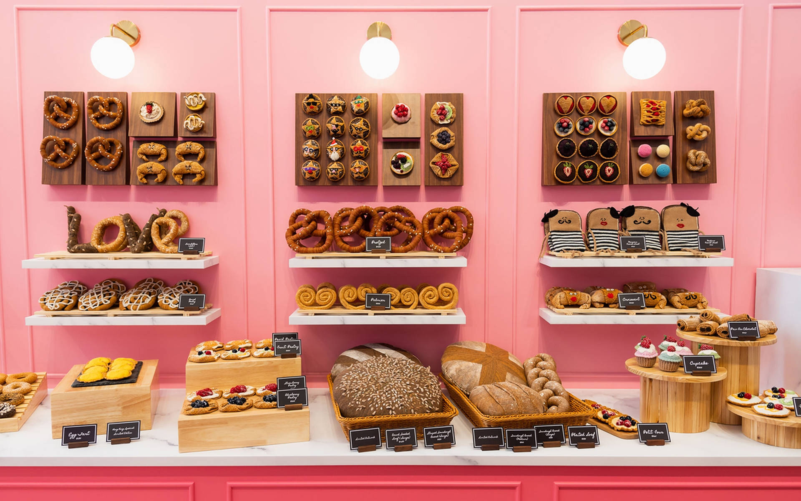
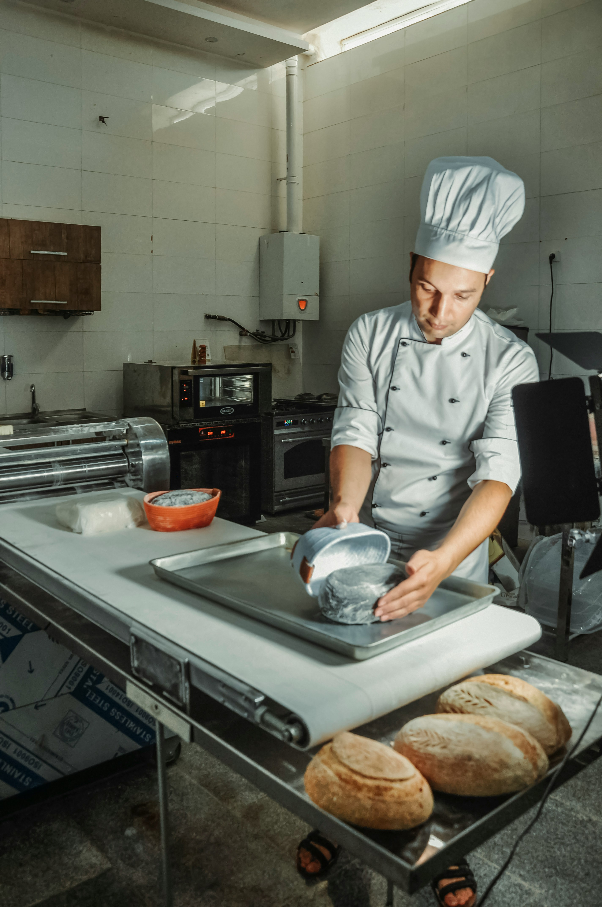
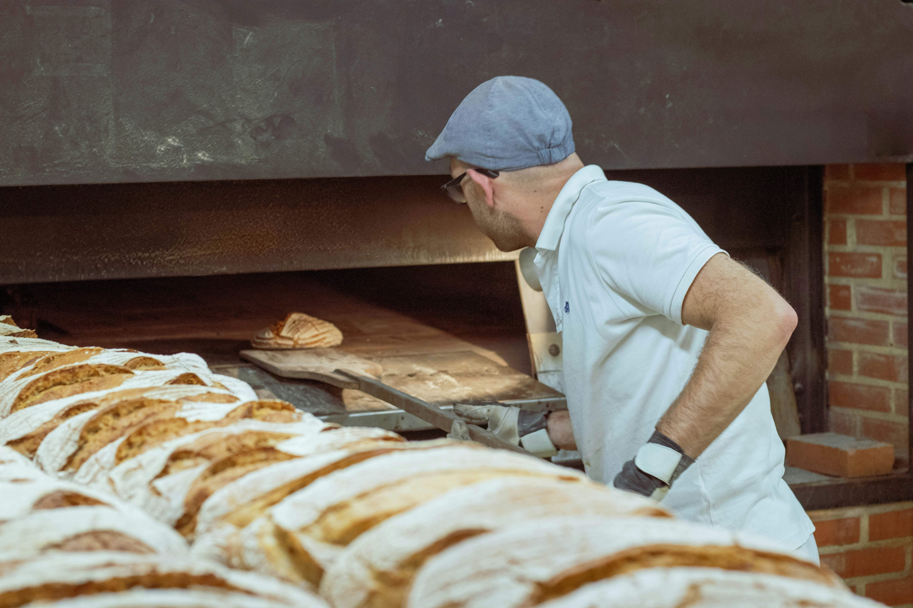
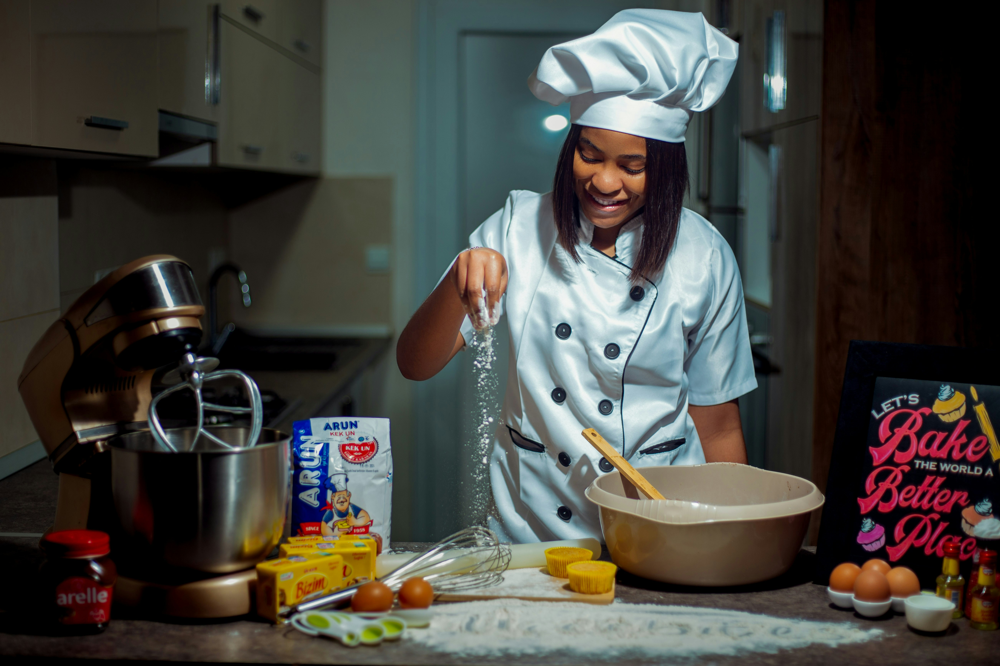

About Us
The story behind every loaf, pastry and cake we make.
How We Became
Sweet Pastry Bakery was born in 2020 out of a simple frustration — it was getting harder and harder to find bread that actually tasted like bread. Our founder, raised in Pretoria, grew up watching her grandmother bake every Saturday morning. That memory became the blueprint.
We started small, selling at a local market in Hatfield with just three products. Word spread fast. By the end of our first year we had a permanent kitchen, a small team, and a loyal base of customers who kept coming back every week.
Today we bake everything by hand using locally sourced ingredients. No shortcuts, no preservatives — just honest food made with care.

What Drives Us
Our Mission
To provide high-quality, freshly baked artisan goods using locally sourced ingredients, keeping traditional baking methods alive while embracing modern creativity.
Our Vision
To become the most trusted artisan bakery in Pretoria — known for craftsmanship, community, and a genuine love for wholesome food.
Meet the Team
The hands behind every bake.

Christian Benard
Head Baker — 12 years experience in artisan bread and pastry. Thandiwe leads the morning bake and sets the standard for everything that leaves our kitchen.

Sipho Dlamini
Cake Designer — Sipho specialises in custom celebration cakes. Every design is hand-crafted and tailored to the customer's brief.

Lerato Sithole
Front of House — Lerato manages customer orders and enquiries. She is usually the friendly voice you hear when you call us.